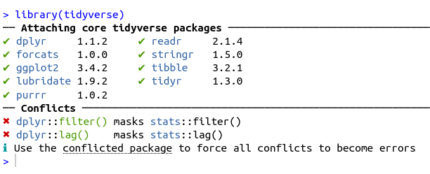
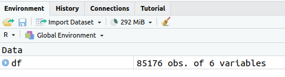
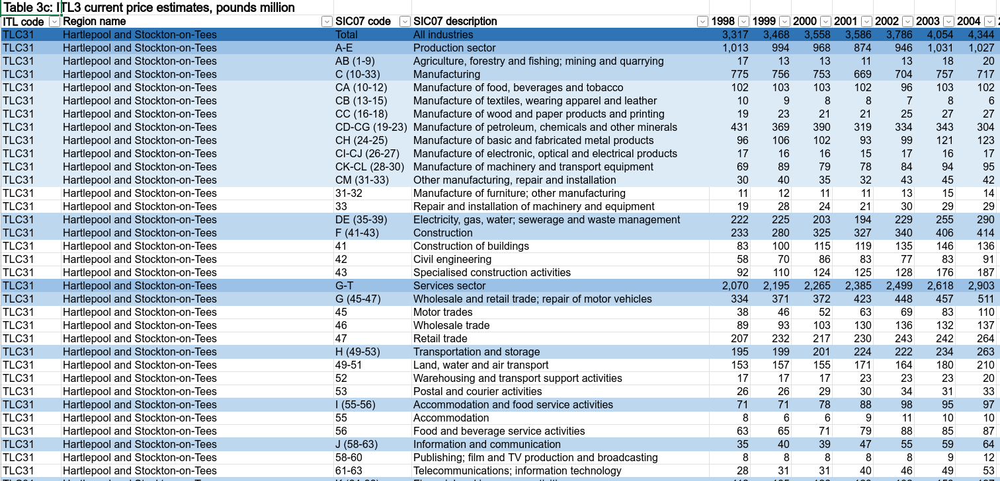
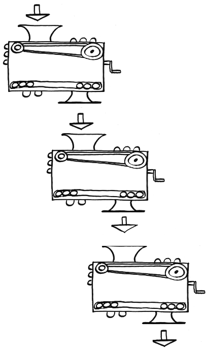
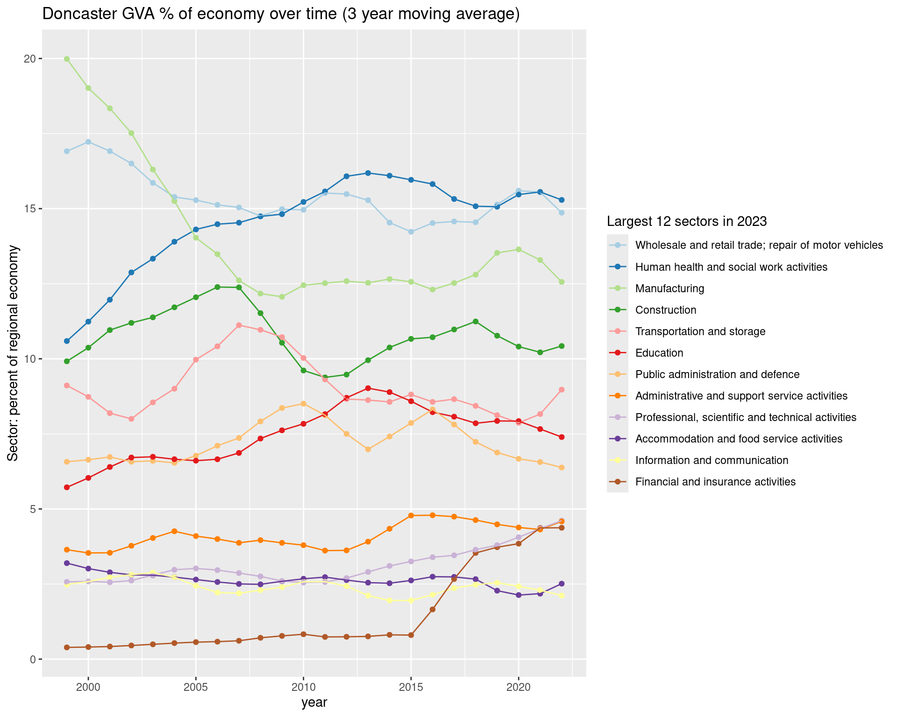
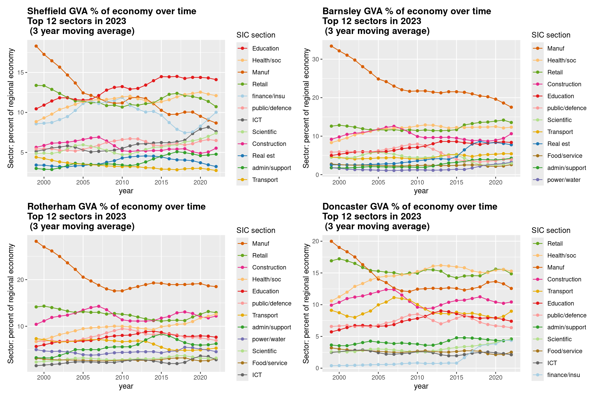

2+2[1] 4sqrt(64)[1] 8We’ll be doing a whistlestop tour of using R for regional economic analysis of UK data. It’s the source we’ll run through in the June ’25 ONS Presents taster session.
Get up and running with RStudio in the cloud

RStudio is where you’ll be doing all the R loveliness (though see also the spangly new positron, I haven’t tried yet).
Before looking at RStudio, let’s make a new R script, where we’ll do the coding.
Task: Open a new R script in RStudio

After that new file’s been made, RStudio should look something like the pic below.
The console is bottom left: all R commands end up being run here. You either run code directly in the console or send code from your R script.
Task: enter some commands directly into the console
Click in the console area so the cursor is on the command line. Type some random sums (or copy, see next slide) - press enter and you’ll see the results directly in the console.
Note that second one: sqrt is a function and arguments go into the brackets. More on that in a mo.
We can assign all manner of things a name to then use them elsewhere: values, strings, lists - and, crucially, data objects like all the UK’s regional GVA. But these all use the same method.
We’ll now stick some code into that newly created R script we made earlier in the top left of RStudio.
All code will run in the console - what we do with scripts is just send our written/saved code to the console.
Let’s test this by adding code to load the tidyverse library.
What’s the tidyverse?
It’s a basket of tools that have become part of the R language - they all fit together to make consistent workflows much easier.
The online book R for Data Science is a great source to learn it, by the person who started it.
Task: add a line of code to the R script
Type or paste the following text at the top of the newly opened R script in the top left panel.
When you’ve put that in, the script title will go red, showing it can now be saved (it should look something like the image below).

Task: Run the library(tidyverse) line
Now we need to actually run that line of code… we can do this in a couple of ways:
Let’s do #1: Run the code line by line.
libary(tidyverse) line in the script (if it’s not there already), either with the mouse or keyboard. (Keyboard navigation is mostly the same as any other text editor like Word, but here’s a full shortcut list if useful.)If all is well, you should see the text below in the console - the tidyverse library is now loaded. Huzzah!

Just one more thing first before actual economic data, sorry. We’re just going to load some functions (and install a couple of libraries) that we’ll need.
If of interest (or you want to check the code isn’t stealing your bank details!) code for these functions are on the github site here.
Task: In the R script, stick this code below the library(tidyverse) line and run it with CTRL+ENTER or the run command
Now we can load some regional GVA data.
Tasks: Load in regional economic data, then look at it in RStudio.
This line takes a comma-separated variable file from the web and names it / assigns it to df. Paste it into your script (below the other code we’ve added) and run it.
If you look at the environment pane, top right. df should now be there (as in the pic below). Click anywhere on that line in the environment pane - it’ll open a new tab in RStudio with a view of the data attached to df.

This is from the latest ONS “Regional gross value added (balanced) by industry: all International Territorial Level (ITL) regions” (The Excel file is available here). Released April 2025, it’s got data up to 2023. It’s got:
Plus…
Let’s start looking at the data in R…
Task: look at what SIC sector categories are in the data
We can do this by pulling out the unique values from a column.
In R, there are different ways to refer to columns. Here’s a key one: use the object’s name, then a dollar sign. R will then let you autocomplete the column name.
[1] "Agriculture, forestry and fishing; mining and quarrying"
[2] "Manufacturing"
[3] "Electricity, gas, water; sewerage and waste management"
[4] "Construction"
[5] "Wholesale and retail trade; repair of motor vehicles"
[6] "Transportation and storage"
[7] "Accommodation and food service activities"
[8] "Information and communication"
[9] "Financial and insurance activities"
[10] "Real estate activities, excluding imputed rental"
[11] "Professional, scientific and technical activities"
[12] "Administrative and support service activities"
[13] "Public administration and defence"
[14] "Education"
[15] "Human health and social work activities"
[16] "Arts, entertainment and recreation"
[17] "Other service activities"
[18] "Activities of households" “R is brilliant” exhibit A: we can use it to automate/repeat tedious things.
Here’s a sample of what the data looks like in the original Excel file. Different SIC sector levels are nested, there’s one column per year (in R, we’ve made year a single ‘tidy’ column)

df object comes from that ONS Excel sheettidyverse to do this - we’ll group by sector for the latest year to see its median and rangeTask: Wrangle the data to get some summary numbers
We’ll talk about what’s going on here a bit more in the next slide. For now - copy and run the code.
Note: RStudio will run the whole block if press CTRL + ENTER with cursor anywhere in it.
df %>%
filter(year == max(year)) %>%
group_by(SIC07_description) %>%
summarise(
median_gva = median(value),
min_gva = min(value),
max_gva = max(value)
) %>%
arrange(-median_gva)# A tibble: 18 × 4
SIC07_description median_gva min_gva max_gva
<chr> <dbl> <dbl> <dbl>
1 Wholesale and retail trade; repair of motor vehic… 998. 113 11342
2 Manufacturing 968 112 4833
3 Human health and social work activities 944 87 4412
4 Construction 705 100 3712
5 Education 612. 75 4336
6 Professional, scientific and technical activities 516. 24 34316
7 Public administration and defence 494. 93 7834
8 Administrative and support service activities 446. 27 12461
9 Transportation and storage 350. 38 2283
10 Real estate activities, excluding imputed rental 320. 8 7529
11 Information and communication 265 13 25073
12 Accommodation and food service activities 264 61 5393
13 Financial and insurance activities 246 5 74615
14 Electricity, gas, water; sewerage and waste manag… 226 10 2547
15 Other service activities 157 19 2500
16 Arts, entertainment and recreation 104. 11 3201
17 Agriculture, forestry and fishing; mining and qua… 43.5 0 1862
18 Activities of households 8 2 65
Here’s the principle with a silly toy example using two functions. Dead simple here, but with larger processing chains it quickly becomes indispensible. It’ll crop up a lot as we go.1
Location quotient (LQ)
Task: run this function and glimpse the result in the console.
We stick four arguments into the function - including the data itself, which here we filter to the latest year.
It’s then piped to glimpse, which lets us look at all columns at once by sticking them on their side (a nice way to check our results look sane).
# LOCATION QUOTIENTS/PROPORTIONS----
add_location_quotient_and_proportions(
df %>% filter(year == max(year)),
regionvar = Region_name,
lq_var = SIC07_description,
valuevar = value
) %>% glimpseRows: 3,276
Columns: 13
$ ITL_code <chr> "TLC31", "TLC31", "TLC31", "TLC31", "TLC31"…
$ Region_name <chr> "Hartlepool and Stockton-on-Tees", "Hartlep…
$ SIC07_code <chr> "AB (1-9)", "C (10-33)", "DE (35-39)", "F (…
$ SIC07_description <chr> "Agriculture, forestry and fishing; mining …
$ year <dbl> 2023, 2023, 2023, 2023, 2023, 2023, 2023, 2…
$ value <dbl> 19, 933, 266, 716, 891, 234, 178, 195, 558,…
$ region_totalsize <dbl> 7091, 7091, 7091, 7091, 7091, 7091, 7091, 7…
$ sector_regional_proportion <dbl> 0.002679453, 0.131575236, 0.037512340, 0.10…
$ total_sectorsize <dbl> 20156, 225096, 63700, 154147, 243916, 83906…
$ totalsize <dbl> 2200006, 2200006, 2200006, 2200006, 2200006…
$ sector_total_proportion <dbl> 0.0091617932, 0.1023160846, 0.0289544665, 0…
$ LQ <dbl> 0.2924594, 1.2859682, 1.2955631, 1.4411007,…
$ LQ_log <dbl> -1.22942932, 0.25151194, 0.25894546, 0.3654…Tip
Once the code from the next slide is in RStudio, if you CTRL + mouse click on the function name, it’ll take you to the code (if you loaded them above). You’ll see it’s a not-too-elaborate piping operation of the type we were just looking at.
The power of functions is in packaging this kind of ‘need often’ task into flexible, reusable form.
In the next code block we’re running the same code but doing four extra things that we chain together:
group_split the data into years (one separate dataframe per year)map each year bundle into the add_location_quotient_and_proportions functionbind_rows it all back togetherdf with the result (first line) so we’ve kept it (rather than, in the last example, just outputting to the console).Task: find LQs and proportions for each year and keep the result
Once run, we can also look at the result again via the environment panel.
(Note: you’ll probably get a warning - this is due to a single negative GVA value, it won’t affect anything here.)
While we’re here: highlight just this bit of code: df %>% group_split(year) and then run. We can see what just that chunk is doing exactly what the function name suggests.
Now let’s do something with result:
rotherh to find Rotherham, but do change it to other places.Output from that code…
# A tibble: 18 × 3
SIC07_description regional_percent LQ
<chr> <dbl> <dbl>
1 Manufacturing 18.8 1.84
2 Construction 12.7 1.81
3 Activities of households 0.139 1.40
4 Transportation and storage 5.28 1.38
5 Human health and social work activities 12.8 1.38
6 Electricity, gas, water; sewerage and waste manageme… 3.89 1.34
7 Public administration and defence 6.74 1.21
8 Wholesale and retail trade; repair of motor vehicles 13.2 1.19
9 Administrative and support service activities 6.47 1.10
10 Education 7.24 1.05
11 Accommodation and food service activities 3.25 1.03
12 Agriculture, forestry and fishing; mining and quarry… 0.694 0.758
13 Other service activities 1.33 0.733
14 Arts, entertainment and recreation 0.774 0.502
15 Professional, scientific and technical activities 3.09 0.333
16 Information and communication 2.20 0.333
17 Financial and insurance activities 1.21 0.123
18 Real estate activities, excluding imputed rental 0.159 0.0398Cheatsheets!
There are a bunch of excellent cheat sheet documents available for many of R’s features. You can easily access them via RStudio’s help menu.
The data tranformation with dplyr sheet covers a lot of the functions we’re using in piping operations.
There’s also an excellent ggplot cheatsheet, among many others.
Let’s plot some of the data. We’ll look at how an ITL3 zone’s broad sectors have changed their proportion over time, to see how those economies have changed structurally.
We’ll do this in 3 stages:
Task: apply the moving average to our df data object and pick out the placename we want
You can look at the available ITL3 zones at geoportal.statistics.gov.uk here, if useful for checking names. (Opens in new tab.)
# PLOT STRUCTURAL CHANGE OVER TIME IN ITL3 ZONE----
#Processing before plot
#1. Set window for rolling average: 3 years
smoothband = 3
#2. Make new column with rolling average in (applying to all places and sectors)
#Years are already in the right order, so will roll apply across those correctly
df = df %>%
group_by(Region_name,SIC07_description) %>%
mutate(
sector_regional_prop_movingav = rollapply(
sector_regional_proportion,smoothband,mean,align='center',fill=NA
)
) %>%
ungroup()
#3. Pick out the name of the place / ITl3 zone to look at
#We only need a bit of the name...
place = getdistinct('doncas',df$Region_name)
#Check we found the single place we wanted (some search terms will pick up none or more than one)
place[1] "Doncaster"Task: for our chosen place, pick out the largest proportion sectors in the most recent year
Here, we filter to get our place and year, arrange in reverse order of moving average, slice off the top 12 and pull out the sector names.
Task: plot smoothed sector proportion over time using ggplot
#Plot!
ggplot(df %>%
filter(
Region_name == place,
SIC07_description %in% top12sectors,
!is.na(sector_regional_prop_movingav)#Remove NAs created by 3 year moving average
),
aes(x = year, y = sector_regional_prop_movingav * 100, colour =
fct_reorder(SIC07_description,-sector_regional_prop_movingav) )) +
geom_point() +
geom_line() +
scale_color_brewer(palette = 'Paired', direction = 1) +
ylab('Sector: percent of regional economy') +
labs(colour = paste0('Largest 12 sectors in ',max(df$year))) +
ggtitle(paste0(place, ' GVA % of economy over time (', smoothband,' year moving average)'))Resulting plot is on on next slide –>

Task:
n <- length(unique(df$SIC07_description))
set.seed(12)
qual_col_pals = RColorBrewer::brewer.pal.info[RColorBrewer::brewer.pal.info$category == 'qual',]
col_vector = unlist(mapply(RColorBrewer::brewer.pal, qual_col_pals$maxcolors, rownames(qual_col_pals)))
randomcols <- col_vector[10:(10+(n-1))]
#Do once!
getplot <- function(place){
df = df %>%
filter(!qg("Activities of households|agri",SIC07_description)) %>%
mutate(
SIC07_description = case_when(
grepl('defence',SIC07_description,ignore.case = T) ~ 'public/defence',
grepl('support',SIC07_description,ignore.case = T) ~ 'admin/support',
grepl('financ',SIC07_description,ignore.case = T) ~ 'finance/insu',
grepl('agri',SIC07_description,ignore.case = T) ~ 'Agri/mining',
grepl('electr',SIC07_description,ignore.case = T) ~ 'power/water',
grepl('information',SIC07_description,ignore.case = T) ~ 'ICT',
grepl('manuf',SIC07_description,ignore.case = T) ~ 'Manuf',
grepl('other',SIC07_description,ignore.case = T) ~ 'other',
grepl('scientific',SIC07_description,ignore.case = T) ~ 'Scientific',
grepl('real estate',SIC07_description,ignore.case = T) ~ 'Real est',
grepl('transport',SIC07_description,ignore.case = T) ~ 'Transport',
grepl('entertainment',SIC07_description,ignore.case = T) ~ 'Entertainment',
grepl('human health',SIC07_description,ignore.case = T) ~ 'Health/soc',
grepl('food service activities',SIC07_description,ignore.case = T) ~ 'Food/service',
grepl('wholesale',SIC07_description,ignore.case = T) ~ 'Retail',
.default = SIC07_description
)
)
top12sectors = df %>%
filter(
Region_name == place,
year == max(year) - 1#to get 3 year moving average value
) %>%
arrange(-sector_regional_prop_movingav) %>%
slice_head(n= 12) %>%
select(SIC07_description) %>%
pull()
ggplot(df %>%
filter(
Region_name == place,
SIC07_description %in% top12sectors,
!is.na(sector_regional_prop_movingav)#Remove NAs created by 3 year moving average
),
aes(x = year, y = sector_regional_prop_movingav * 100, colour = fct_reorder(SIC07_description,-sector_regional_prop_movingav) )) +
geom_point() +
geom_line() +
scale_color_manual(values = setNames(randomcols,unique(df$SIC07_description))) +#set manual pastel colours matching sector name
ylab('Sector: percent of regional economy') +
theme(plot.title = element_text(face = 'bold')) +
labs(colour = 'SIC section') +
# scale_y_log10() +
ggtitle(paste0(place, ' GVA % of economy over time\nTop 12 sectors in ',max(df$year),'\n (', smoothband,' year moving average)'))
}
places = getdistinct('doncas|roth|barns|sheff',df$Region_name)
plots <- map(places, getplot)
patchwork::wrap_plots(plots)